Species Index · 65 species
Species index
Ranked by how often you meet them, 65 species in all. Narrow it down with the group buttons above, or search by name.
Abundant 12
Common 36
Uncommon 14
Locally common 2
Rare 1
-
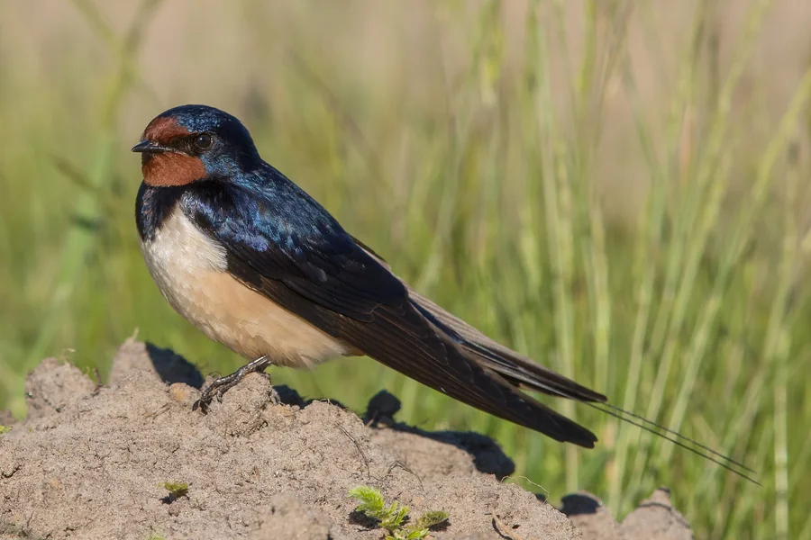
NO. 001Barn Swallow
Hirundo rustica -
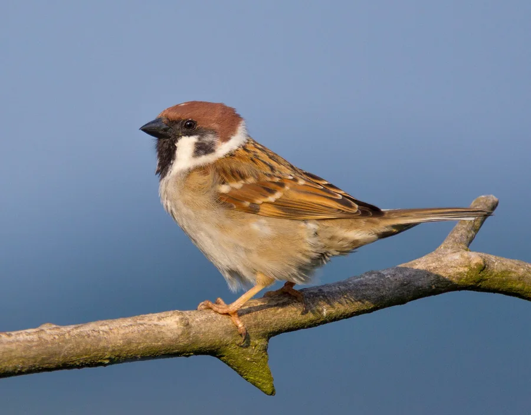
NO. 002Eurasian Tree Sparrow
Passer montanus -
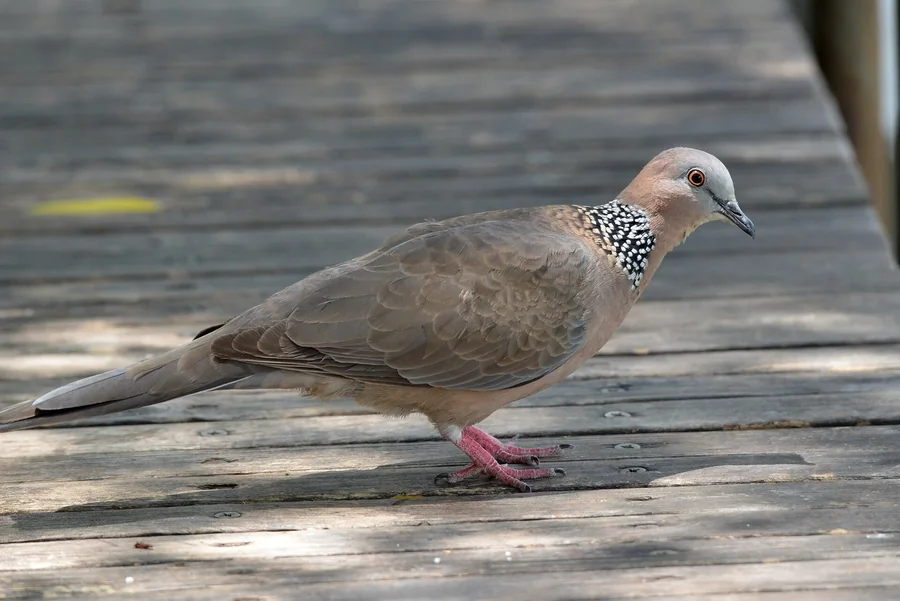
NO. 003Spotted Dove
Spilopelia chinensis -
 NO. 004
NO. 004
Light-vented Bulbul
Pycnonotus sinensis -
 NO. 005
NO. 005
White Wagtail
Motacilla alba -
 NO. 006
NO. 006
Plain Prinia
Prinia inornata -
 NO. 007
NO. 007
Yellow-browed Warbler
Phylloscopus inornatus -
 NO. 008
NO. 008
Chinese Pond Heron
Ardeola bacchus -
 NO. 009
NO. 009
Little Egret
Egretta garzetta -
 NO. 010
NO. 010
Common Moorhen
Gallinula chloropus -
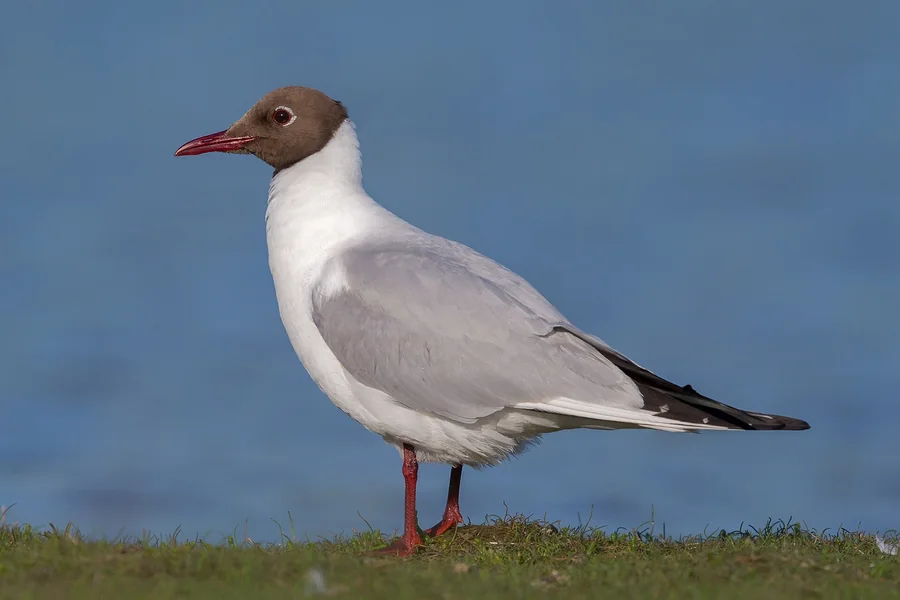
NO. 011Black-headed Gull
Chroicocephalus ridibundus -
 NO. 012
NO. 012
Dunlin
Calidris alpina -
 NO. 013
NO. 013
Red-billed Starling
Spodiopsar sericeus -
 NO. 014
NO. 014
Chinese Blackbird
Turdus mandarinus -
 NO. 015
NO. 015
Crested Myna
Acridotheres cristatellus -
 NO. 016
NO. 016
Daurian Redstart
Phoenicurus auroreus -
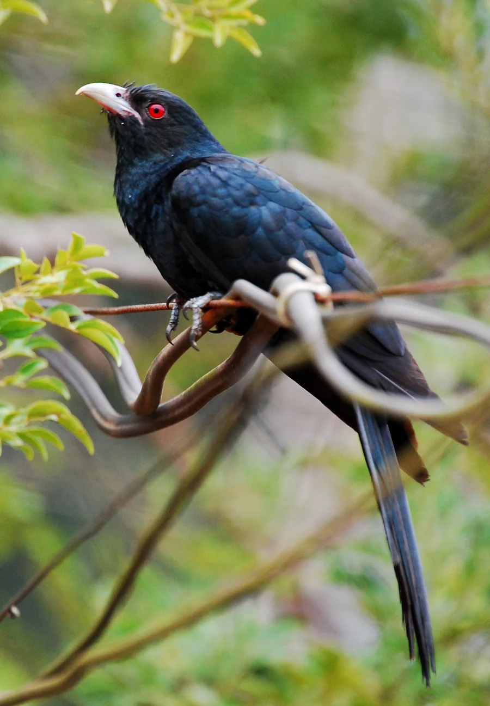
NO. 017Asian Koel
Eudynamys scolopaceus -
 NO. 018
NO. 018
Large-billed Crow
Corvus macrorhynchos -
 NO. 019
NO. 019
House Swift
Apus nipalensis -
 NO. 020
NO. 020
Scaly-breasted Munia
Lonchura punctulata -
 NO. 021
NO. 021
Swinhoe's White-eye
Zosterops simplex -
 NO. 022
NO. 022
Zitting Cisticola
Cisticola juncidis -
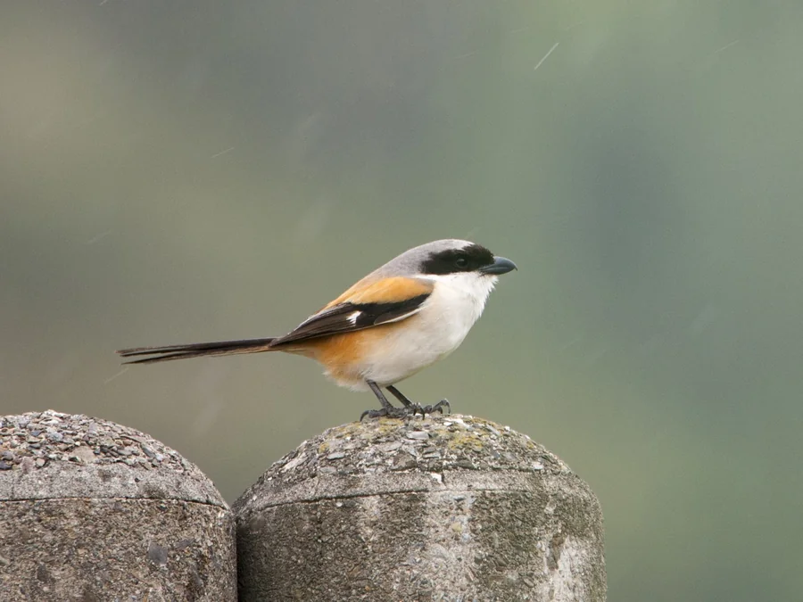
NO. 023Long-tailed Shrike
Lanius schach -
 NO. 024
NO. 024
Sooty-headed Bulbul
Pycnonotus aurigaster -
 NO. 025
NO. 025
Red-whiskered Bulbul
Pycnonotus jocosus -
 NO. 026
NO. 026
Common Tailorbird
Orthotomus sutorius -
 NO. 027
NO. 027
Black Drongo
Dicrurus macrocercus -
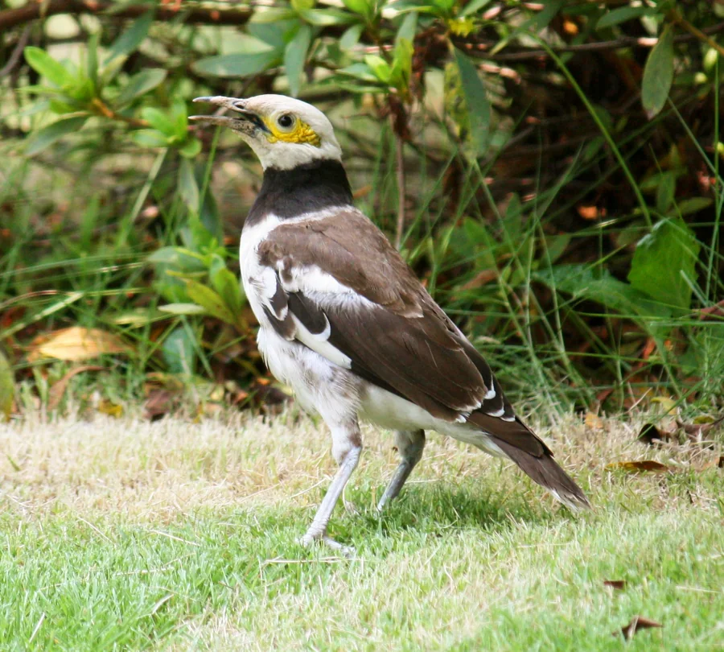
NO. 028Black-collared Starling
Gracupica nigricollis -
 NO. 029
NO. 029
Intermediate Egret
Ardea intermedia -
 NO. 030
NO. 030
Black-crowned Night Heron
Nycticorax nycticorax -
 NO. 031
NO. 031
Great Egret
Ardea alba -
 NO. 032
NO. 032
Little Grebe
Tachybaptus ruficollis -
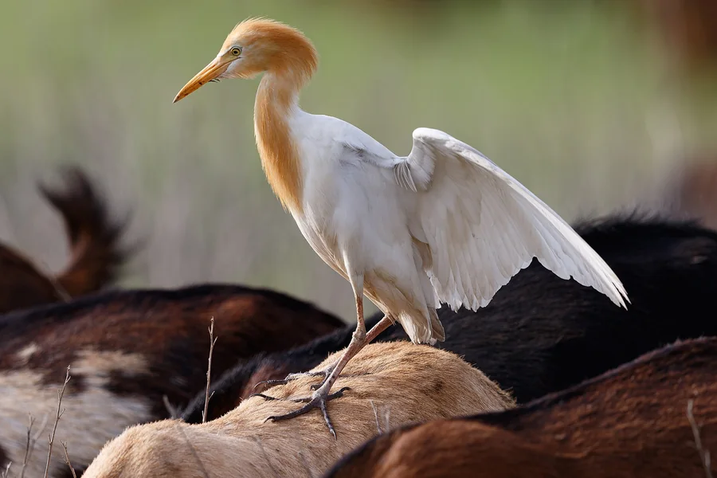
NO. 033Eastern Cattle Egret
Bubulcus ibis -
 NO. 034
NO. 034
White-breasted Waterhen
Amaurornis phoenicurus -
 NO. 035
NO. 035
Eurasian Coot
Fulica atra -
 NO. 036
NO. 036
Eurasian Teal
Anas crecca -
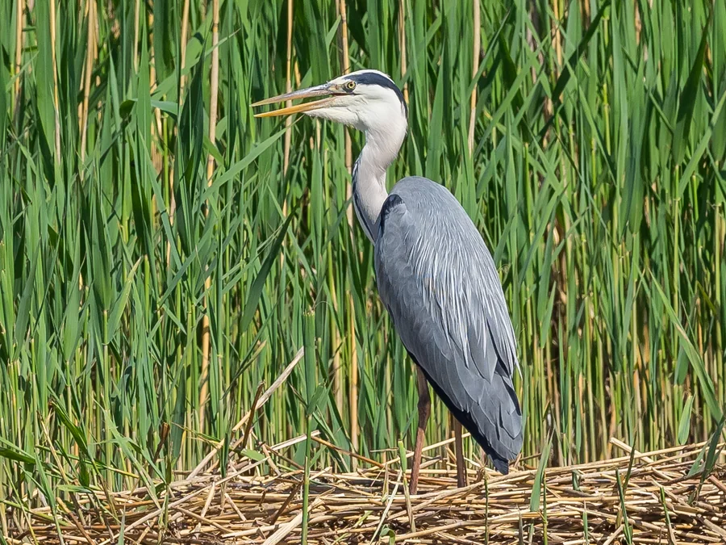
NO. 037Grey Heron
Ardea cinerea -
 NO. 038
NO. 038
Great Cormorant
Phalacrocorax carbo -
 NO. 039
NO. 039
Grey Plover
Pluvialis squatarola -
 NO. 040
NO. 040
Kentish Plover
Charadrius alexandrinus -
 NO. 041
NO. 041
Common Sandpiper
Actitis hypoleucos -
 NO. 042
NO. 042
Common Greenshank
Tringa nebularia -
 NO. 043
NO. 043
Black-winged Stilt
Himantopus himantopus -
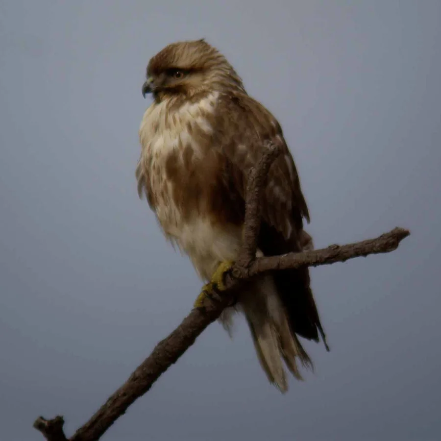
NO. 044 Class IIEastern Buzzard
Buteo japonicus -
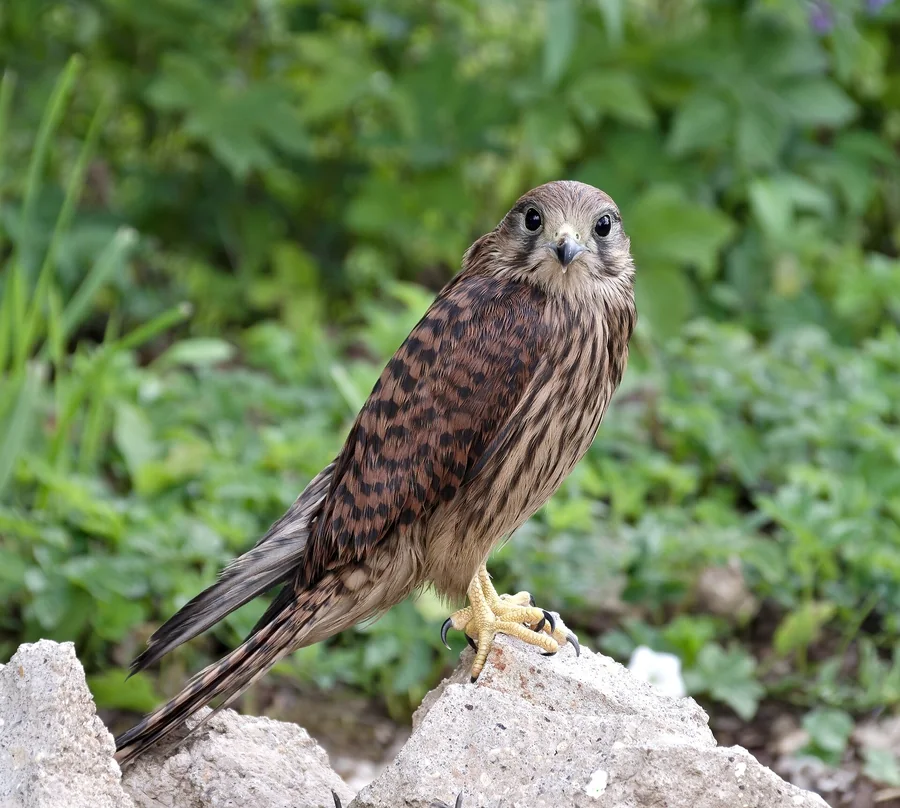
NO. 045 Class IICommon Kestrel
Falco tinnunculus -
 NO. 046
Class II
NO. 046
Class II Black Kite
Milvus migrans -
 NO. 047
NO. 047
Common Kingfisher
Alcedo atthis -
 NO. 048
Class II
NO. 048
Class II White-throated Kingfisher
Halcyon smyrnensis -
 NO. 049
NO. 049
Fork-tailed Sunbird
Aethopyga christinae -
 NO. 050
Class II
NO. 050
Class II Chinese Hwamei
Garrulax canorus -
 NO. 051
Class II
NO. 051
Class II Greater Coucal
Centropus sinensis -
 NO. 052
NO. 052
Black-throated Laughingthrush
Pterorhinus chinensis -
 NO. 053
NO. 053
Great Crested Grebe
Podiceps cristatus -
 NO. 054
NO. 054
Striated Heron
Butorides striata -
 NO. 055
NO. 055
Pied Avocet
Recurvirostra avosetta -
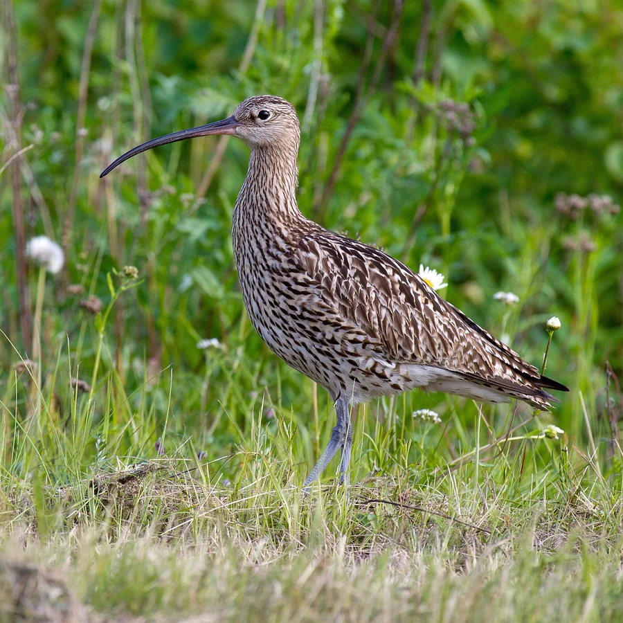
NO. 056 Class IIEurasian Curlew
Numenius arquata -
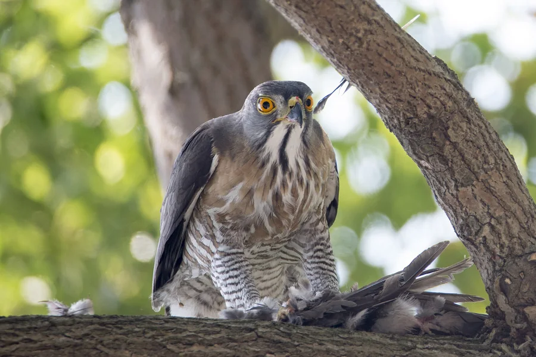
NO. 057 Class IICrested Goshawk
Accipiter trivirgatus -
 NO. 058
Class II
NO. 058
Class II Crested Serpent Eagle
Spilornis cheela -
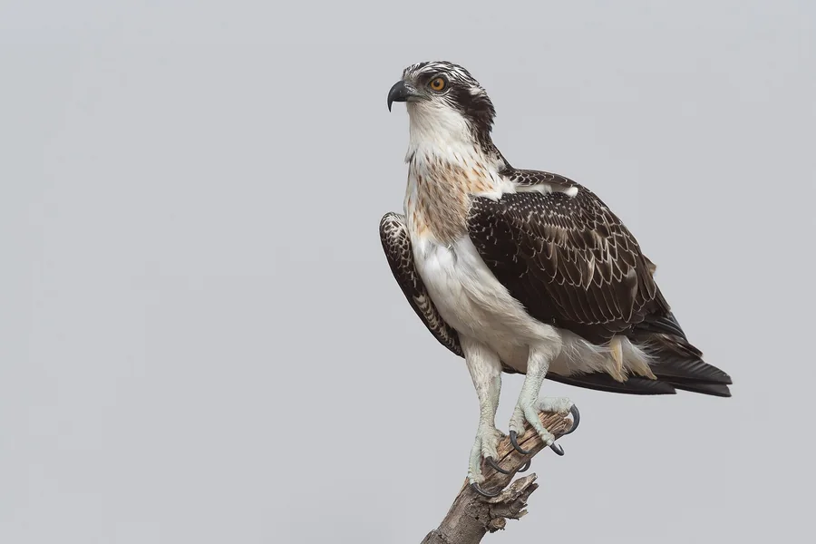
NO. 059 Class IIOsprey
Pandion haliaetus -
 NO. 060
Class II
NO. 060
Class II Black-winged Kite
Elanus caeruleus -
 NO. 061
NO. 061
Pied Kingfisher
Ceryle rudis -
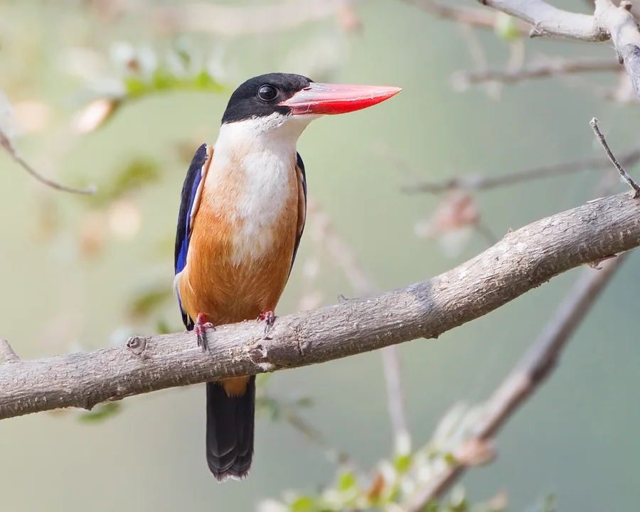
NO. 062 Class IIBlack-capped Kingfisher
Halcyon pileata -
 NO. 063
Class I
NO. 063
Class I
Saunders's Gull
Saundersilarus saundersi -
 NO. 064
Class I
NO. 064
Class I
Black-faced Spoonbill
Platalea minor -
 NO. 065
Class II
NO. 065
Class II Eurasian Spoonbill
Platalea leucorodia
No species match. Try another word.